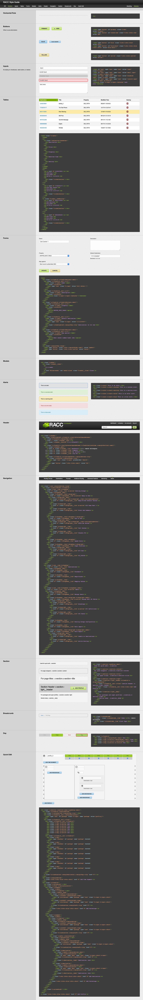

Call centers handle millions of calls from their customers each day, and RACC (Routing And Call Control) does the heavy lifting. As Vail Systems' largest product, RACC's web application has grown over its ten years of existence, but was now filled with legacy code. As different developers worked on the product over the years, implementation styles changed and the latest technology was tried out on new features, leaving a codebase that included vanilla JavaScript, JQuery, Angular, and React, and little organization. The stylesheets lived in at least three or four different locations and were riddled with overrides. It's easy to say RACC was due for a rewrite.
Unfortunately our team never had the bandwidth to do a full rewrite, but having my SCSS framework newly available we knew we could add some organization to the front-end code. Granted, this would still include a rewrite of all HTML/SLIM/HAML and CSS/SCSS across a large, tangled monolith, so it took some planning.
The various technologies used over the years were also causing issues with usability and were limiting what we could change as the product grew.
One of the large issues with RACC was the rampant code duplication in both the markup and styles. Many buttons that only differed in their copy used different code, or whole pages using the same layout had been rewritten to look and function the same.
I would be starting from scratch to write the new stylesheets and converting one page of markup at a time, so I needed to know how to consolidate the current code into components. The best way to do this was to create an inventory of existing elements.
The first three pages of the component inventory.
I made note of any differing circumstances for each and consolidated them into one new component. Using my SCSS framework as a base, I created the RACC-specific styles as I went.
Once I had created the common components, I began rewriting the markup page by page. The development team continued to develop new features and releases during the rewrite, so I worked closely with a developer to keep my branch up to date with the develop branch, and fix tests as I broke them.
I also created a pattern library for the new components which included examples and code snippets of components for developers to use when building new features.
The RACC pattern library, descriptions to be added on the left.
While the conversion hasn't been completed yet, it didn't take long before the developers were able to use the converted components to help convert the markup, as well as use the new styles when developing new features for RACC. The conversion has already made development quicker and easier for the developers, and will only continue to grow.